Effort: 20 min
In this lab, you will get started with GitHub by creating a GitHub account and project and adding a file to it using its Web interface.
After completing this lab, you will be able to:
First, let us introduce to GitHub. GitHub in simple words is a collection of folders and files. It is a Git repository hosting service, but it adds many of its own features. While Git is a command-line tool and a server needs to be hosted and maintained via command line as well, GitHub provides this Git server for you and a Web-based graphical interface. It also provides access control and several collaboration features, such as wikis and basic task management tools for every project. GitHub provides cloud storage for source code, supports all popular programming languages, and streamlines the iteration process. GitHub includes a free plan for individual developers and for hosting open source projects.
Please follow the steps given below to create an account in GitHub:
Step 1: Create an account: https://github.com/join
NOTE: If you already have a GitHub account, you can skip this step and simply login to your account.
Step 2: Provide the necessary details to create an account as shown below:
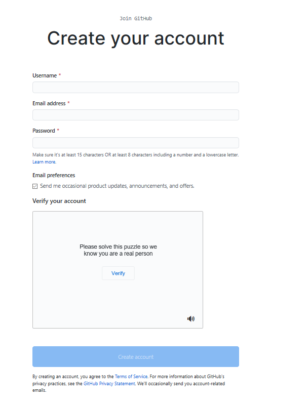
and click Create account.
Step 3: Click Verify to verify the account and click Done
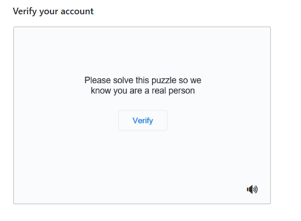
Step 4: After verification, click Join a Free Plan
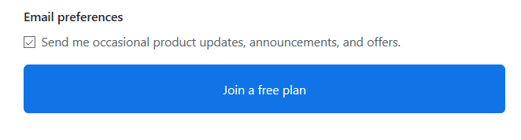
Step 5: Select the details as shown below and click Complete Setup
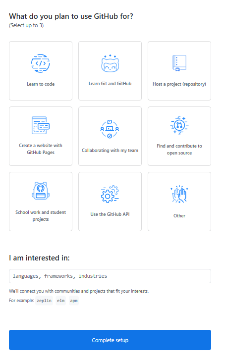
Step 6: Go to your email, find the verification email from GitHub, and click on the link/button in that email to verify your email.
NOTE: If you do not receive verification email, click Resend verification email.
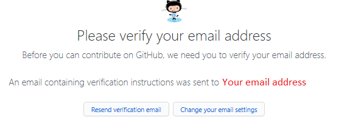
Email is verified
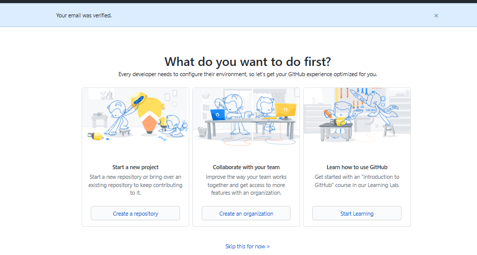
Step 1: Click on the + symbol and click New repository.
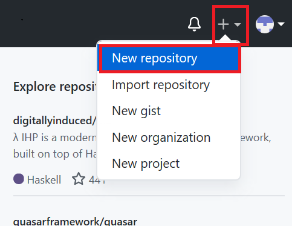
Step 2: Provide a repository a name and initialize with the empty README.md file.
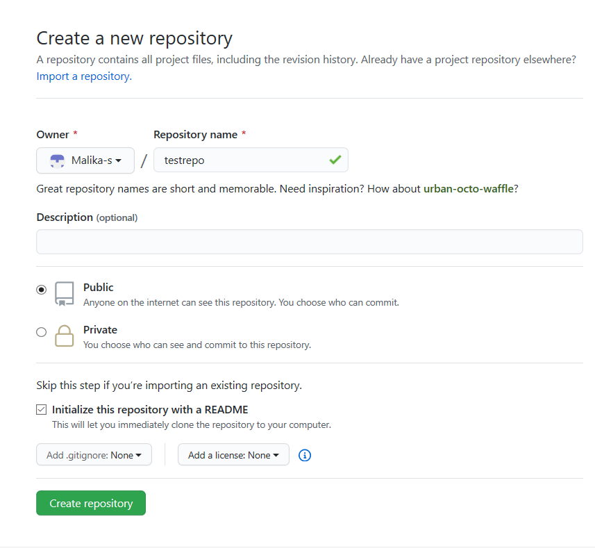
and click Create repository.
Now, you will be redirected to the repository you have created.
Let's start editing the repository.
Step 1: Once the repository is created, the root folder of your repository is listed by default and it has just one file ReadMe.md. Click on the pencil icon to edit the file.
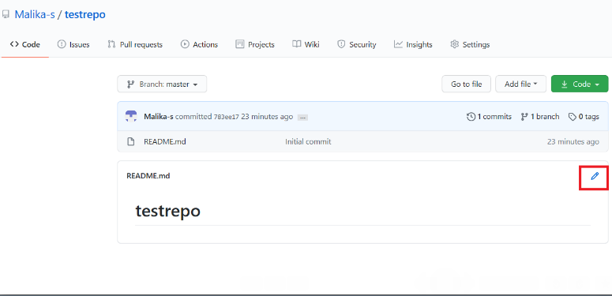
Step 2: Add text to file.
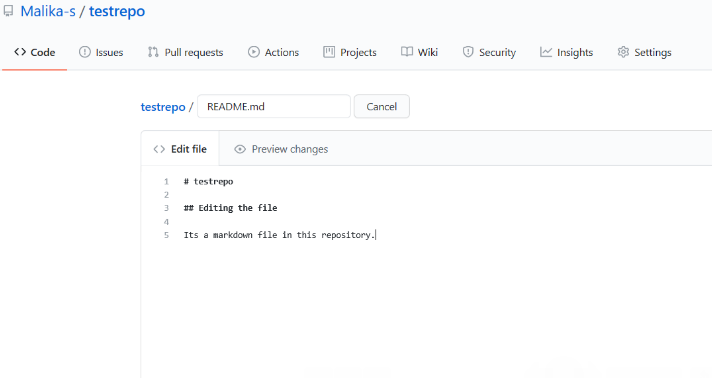
Step 3: Scroll down the page after adding the text and click Commit Changes.
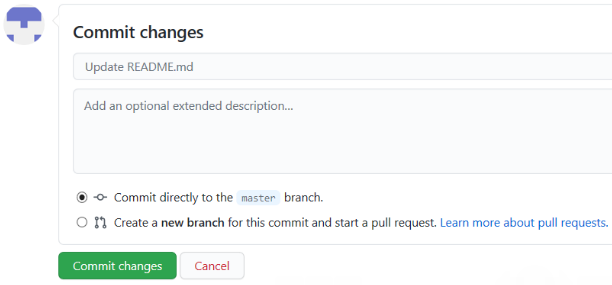
Now, check your file is edited with the new text.
Step 1: Click on the repository name to go back to the master branch like in this testrepo.
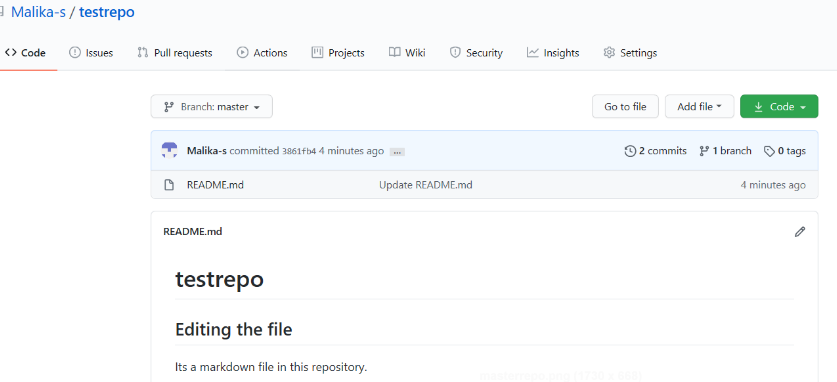
Step 2: Click Add file and select Create New file to create a file in the repository.
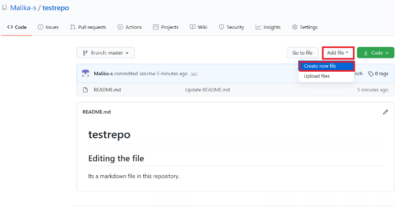
Step 3: Provide the file name and the extension of the file. For example, firstpython.py and add the lines.
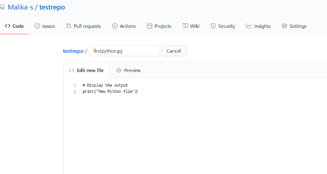
Step 4: Scroll down the page after adding the text. Add description of the file (optional) and click Commit new file.
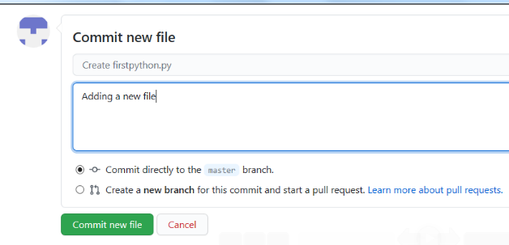
Step 5: Your file is now added to your repository and the repository listing shows when the file was added/changed.
Step 1: Click Add file and select Upload files to upload a file (Upload any .txt,.ipynb, .png file) in the repository from the local computer.
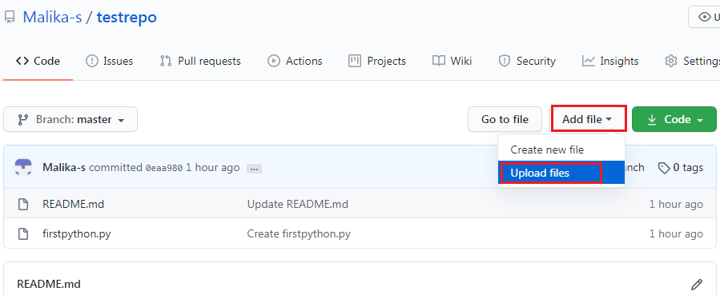
Step 2: Click on choose your files and choose any files from your computer.
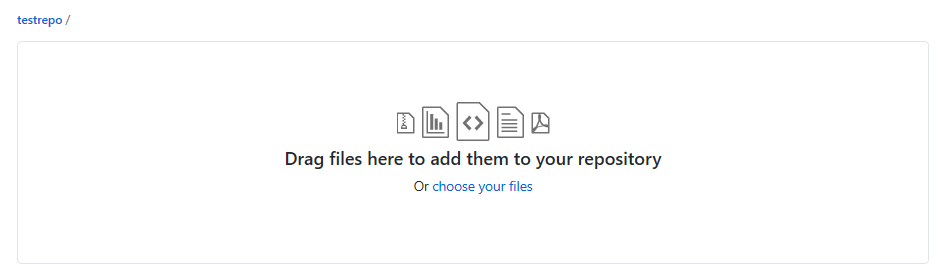
Step 3: Once the file finishes uploading, click on Commit Changes
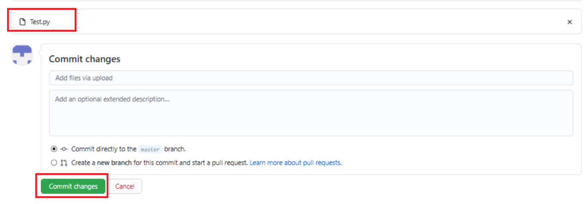
Step 4: Now, your file is uploaded in the repository.
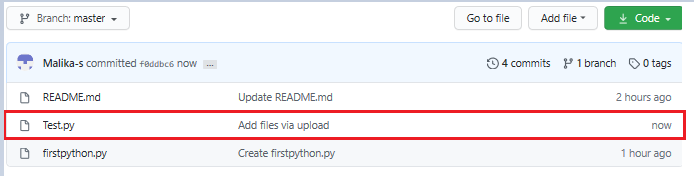
In this document, you have learned how to create a new repository, adding a new file, editing a file, and uploading a file in a repository and commit the changes.
Rav Ahuja
| Date | Version | Changed by | Change Description |
|---|---|---|---|
| 2020-07-16 | 0.5 | Malika Singla | Spell check, step number added |
| 2020-07-14 | 0.4 | Rav Ahuja | Changed logo, updated effort, title, intro, objectives, added Authors and Changelog |
| 2020-07-13 | 0.3 | Malika Singla | Added to GitLab and made some formatting changes, added objectives, etc. |
| 2020-07-03 | 0.2 | Malika Singla | Ported to markdown and added GitHub account signup, new screenshots, etc. |
| 2020-06-30 | 0.1 | Romeo Kienzler | Drafted initial version |